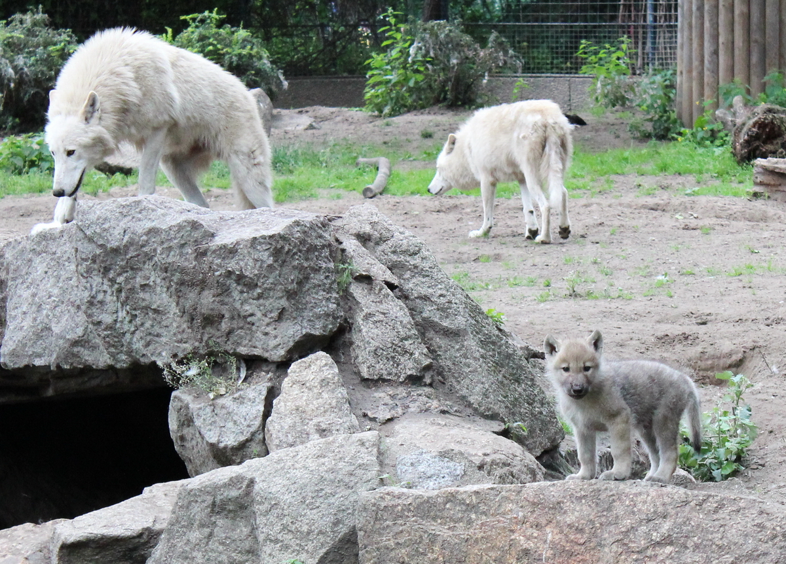
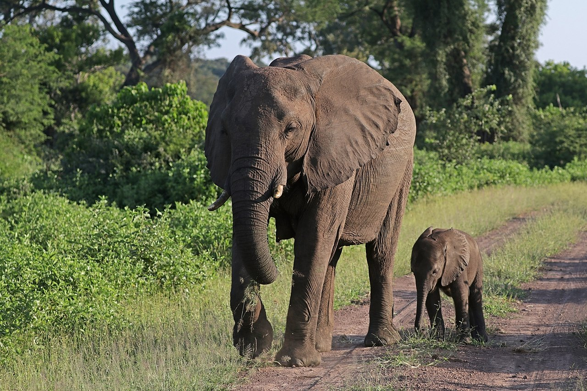
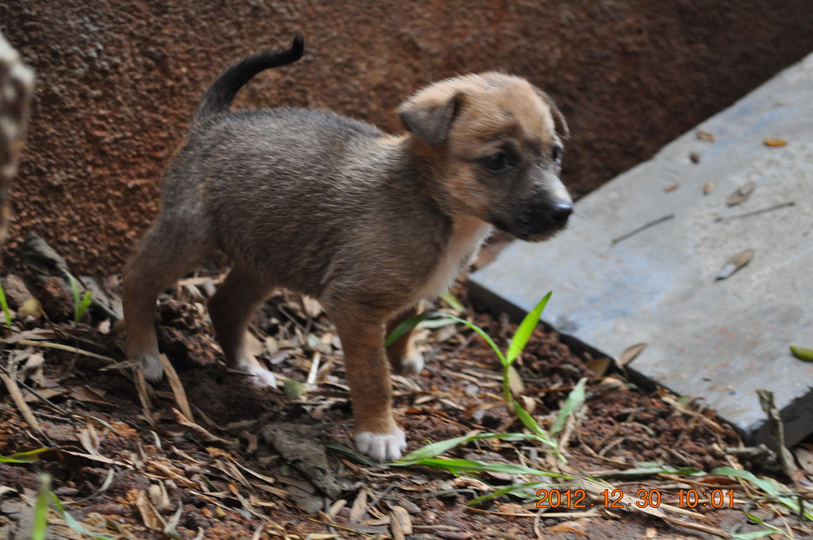
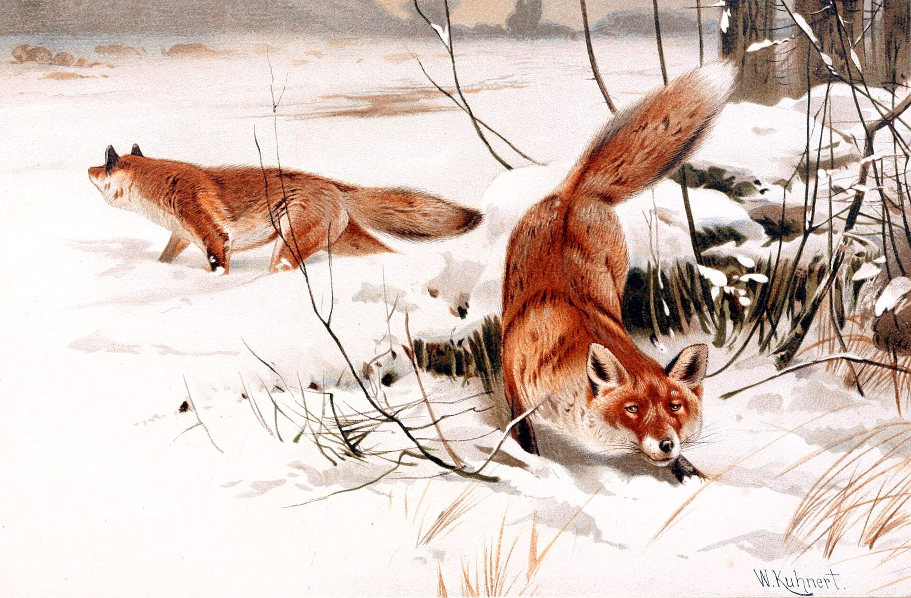
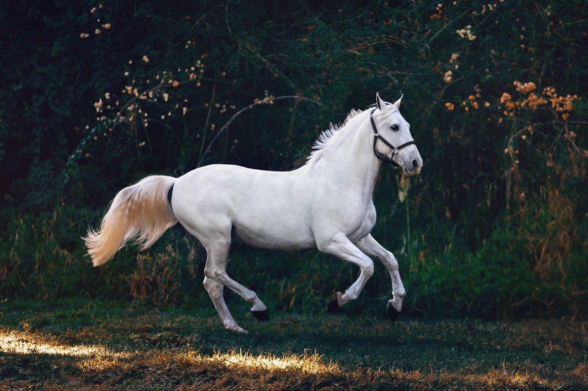
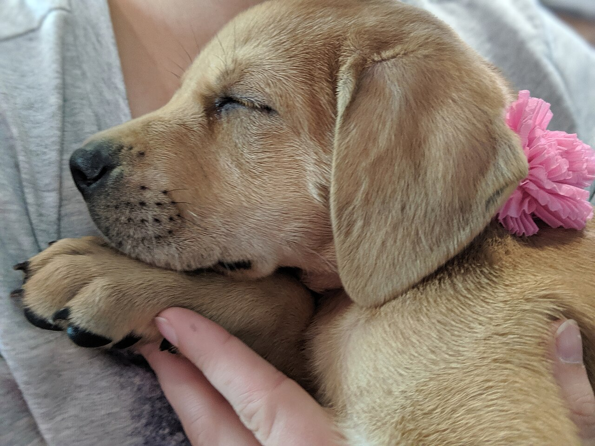

Graduate student in software engineering.
A crazy animal lover.
Easily distracted by dogs.
A few animal pictures.
Nothing fancy — just some I liked.

The whole pack, quietlytwo arctic wolves and a pup who doesn’t know he’s mighty yet

Family, in greya mother and her six-week-old, on a road that belongs to them

Hope has four pawsa street puppy, braver than all of us

Small fire in the snowfoxes painted in the 1800s — still alive to me

Unfenceda white horse in golden light

Exhibit A: easily distracteda puppy, a pink flower, a full heart
About me, briefly.
I’m Sowmya — I build software, I chase ideas, and I will absolutely
cross a street to say hi to a dog. Right now I’m studying practical
full stack development (TCSS 506), learning how to take things from
my laptop to the cloud — this page being Exhibit B.